Input: Pre-Processing
在 PLAXIS Input 裡按的每一個按鈕，背後都是一行文字指令（Command）。把指令存成一份 txt，就得到一個可以重跑、可以逐行比對、可以批次修改的模型。這一章用光明地下廠房 plan_e 的建模過程，一步一張 GUI 截圖，旁邊對照同一件事的 Command 寫法。
建一個分階開挖模型要經過哪幾步？每一步在 GUI 哪裡設定？同一步用 Commands runner 要怎麼寫？
GUI 與 Command 的關係
PLAXIS Input 的畫面上方是五個模式頁籤，建模就是由左到右走一遍：Soil → Structures → Mesh → Flow conditions → Staged construction。前三個建立「模型」，後兩個建立「計算相位」。
畫面最下方是 Command line。用滑鼠做的任何操作，PLAXIS 都會先翻譯成一行指令再執行，並顯示在這裡：
- Session 頁籤：這次開檔以來執行過的指令與回饋（綠字成功、紅字錯誤）。
- Model history 頁籤：整個專案從建立以來的全部指令。右鍵可以複製全部或只複製成功的指令，貼到文字檔就是一份建模腳本。
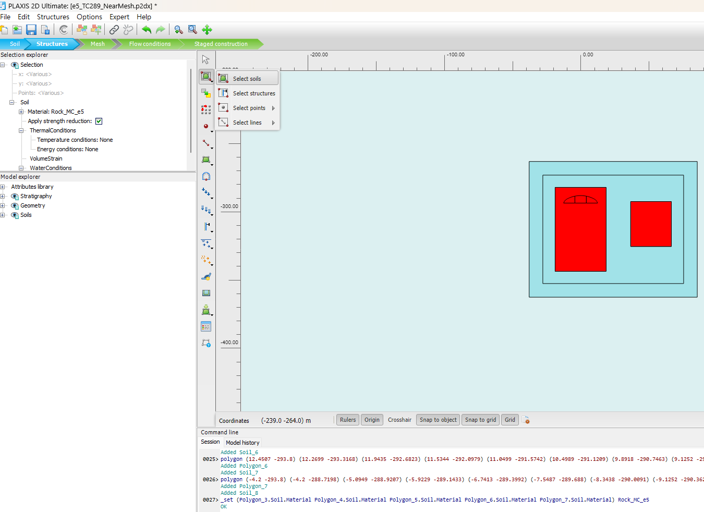
_set 指令（0027）。三種執行指令的方式
| 方式 | 位置 | 適合 |
|---|---|---|
| Command line | Input／Output 畫面下方 | 逐行試指令、查屬性名稱 |
| Commands runner | Expert > Run commands | 整份 txt 貼上一次執行：這一章的主角 |
| Macro library | Expert > Macro library | 常用的一小段指令存起來重複用 |
| Python（remote scripting） | Expert > Configure remote scripting server | 需要迴圈、條件判斷、讀檔時；語法是同一套指令的 Python 包裝 |
Python 版只是把同一個指令變成函式呼叫，參數順序完全相同，所以學會 Command 等於學會一半的 Python 建模：
| Command | Python（g_i = Input 伺服器） |
|---|---|
borehole 0 | g_i.borehole(0) |
polygon (0 0) (5 0) (5 3) | g_i.polygon((0, 0), (5, 0), (5, 3)) |
set Phase_1.Deform.Loading.SumMstage 1.0 | g_i.Phase_1.Deform.Loading.SumMstage = 1.0 |
deactivate Soil_6_1 Phase_1 | g_i.deactivate(g_i.Soil_6_1, g_i.Phase_1) |
① 可重現：同一份 txt 在新專案貼上，得到完全相同的網格與相位。② 可比對：兩個案例差在哪裡，用文字比對工具一眼看出。③ 可批次修改：17 個相位都要改容許誤差，在 txt 裡取代一次就好，不用在 GUI 點 17 次。④ 可留紀錄：每一行可以寫註解，交代數值從哪裡來。
Command 語法規則
一行指令＝指令名稱＋參數。參數的個數與型別由指令決定。指令分兩類：
全域指令（global）
對整個專案或幾何作用，不需要指定對象。例如 borehole 0、polygon …、mesh 0.015、gotostages、undo。
目標指令（target）
對指定的物件作用，第一個參數是物件名稱。例如 set Phase_1.MaxCores 12、deactivate Soil_6_1 Phase_1、delete Polygon_3。
參數怎麼寫
| 項目 | 規則 | 例子 |
|---|---|---|
| 物件名稱 | 直接寫名稱，不加引號；名稱不能以底線開頭 | Rock_MC_TC289、Phase_3 |
| 屬性 | 物件名稱後面用點串接，可以一路往下 | Phase_1.Deform.Loading.SumMstage |
| 字串 | 單引號或雙引號都可以；中文可用 | "L01_主廠房頂拱中央導坑" |
| 數字 | 小數點一律用「.」；可用科學記號 | 15000000.0、1.5e7 |
| 布林 | True／False（大寫開頭） | "TensionCutOff" True |
| 列舉 | 寫字串（GUI 上顯示的文字）或整數索引 | "K0 procedure"、"SoilModel" 2 |
| 座標 | 可加括號分組，增加可讀性 | polygon (0 0) (5 0) (5 3) |
| 索引 | 串列可用 [n] 取第 n 個（從 0 起算，負數從尾端） | Points[0]、Phases[-1] |
| 註解 | # 之後到行尾都不執行；可以單獨一行，也可以接在指令後面 | point 0 -288.3 # 拱頂 |
底線前綴與查詢指令
- 底線前綴：GUI 產生的指令前面會加
_（例如_set、_polygon），用來和同名物件區分；自己寫的時候可以省略，set和_set完全相同。 - 查屬性名稱：在 GUI 改一次你想設定的欄位，再到 Command line 看它產生的
_set 物件.屬性 值，照抄即可。這是找出「GUI 欄位 ↔ 指令屬性名」最快的方法。 - 列出物件：
echo Phase_1顯示物件的屬性與子物件名稱；tabulate Points "x y"把一類物件列成表。 - 指令簽名：
cms列出所有指令與參數組合；完整說明在 Help > Command reference。
echo Rock_MC_TC289 # 看材料的全部屬性名稱與目前值
echo Phase_1.Deform # 看相位計算設定（ΣMstage、迭代參數…）
tabulate Points "x y" # 列出所有幾何點座標
cms # 列出所有指令的參數格式建模流程總表
以下各節的範例都取自 KuanMing_plan_e7.txt（光明地下廠房，主廠房＋主變室、17 階分階開挖、無支撐）。整份 414 行，分成 8 節，和 GUI 的操作順序一一對應：
| # | 步驟 | GUI 位置 | 主要 Command | 本章 |
|---|---|---|---|---|
| 1 | 分析域與鑽孔 | File > Project properties；Soil 模式 > Create borehole | initializerectangular、borehole、soillayer | 2.4 |
| 2 | 材料 | Show materials > Soil and interfaces | soilmat、set 材料.屬性 | 2.5 |
| 3 | 幾何與量測點 | Structures 模式 > Create soil polygon／point | gotostructures、polygon、point | 2.6 |
| 4 | 網格 | Mesh 模式 > Refine／Generate mesh | gotomesh、CoarsenessFactor、mesh | 2.7 |
| 5 | 施工相位 | Staged construction > Phases | gotostages、phase、deactivate | 2.8 |
| 6 | 迭代參數 | Phases > Numerical control parameters | set Phase_n.Deform.… | 2.9 |
| 7 | 量測點（curve points） | Select points for curves（Output） | selectmeshpoints、acp、update | 2.10 |
| 8 | 計算與存檔 | Calculate | calculate、save | 2.10 |
txt 的使用方式
- PLAXIS 2D Input 開新專案（預設 kN、m、Plane strain、15-Noded 即可）。
- Expert > Run commands 開 Commands runner，整份貼上執行。第一行
save "…\xxx.p2dx"先決定存檔位置。 - 執行到第 7 節的
acp會停下（那是 Output 的指令），此時前 6 節已完成並存檔。 - 回 Staged construction 按 Select points for curves 開 Output，把第 7 節貼進 Output 的 Commands runner。
- 回 Input 按 Calculate（或執行
calculate、save）。
PLAXIS 依建立順序自動命名（Polygon_1、Soil_2…），而且在網格與相位模式會把交切後的區塊重新命名。專案裡若已經有別的物件，所有編號都會錯開，後面的 set、deactivate 就會出現 Unknown object。
① 分析域與鑽孔
- File > Project properties > Model：單位 kN、m；Model 選 Plane strain；Elements 選 15-Noded。
- 同一頁 Contour：xmin −315、xmax 360、ymin −637.8、ymax 0。座標系：x 以主廠房中心為 0；Y ＝ EL − 1203，地表為 0。
- Soil 模式按 Create borehole，在 x ＝ 0 點一下，開出 Modify soil layers。
- Add 一層：Top 0、Bottom −637.8（單一岩層建到模型底）。
- Borehole 的 Head 設 −647.8：水位在模型底以下，整個模型是乾的。
# ── 1. 分析域與鑽孔 ──
initializerectangular SoilContour -315 -637.8 360 0 # xmin ymin xmax ymax
borehole 0 # 在 x = 0 建鑽孔 → Borehole_1
soillayer 637.8 # 加一層厚 637.8 m → Soillayer_1
set Borehole_1.Head -647.8 # 水頭在模型底以下（乾燥）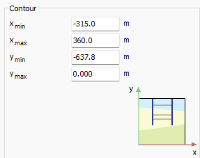
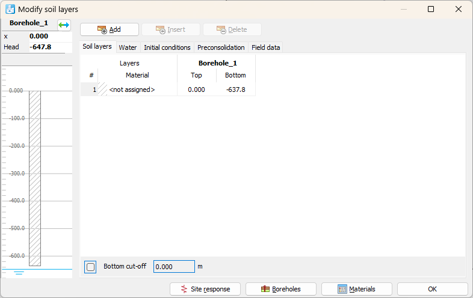
| 指令 | 參數 | 產生的物件 |
|---|---|---|
initializerectangular SoilContour | xmin ymin xmax ymax（注意順序是左下、右上） | 矩形分析域 |
borehole | x 座標 | Borehole_1、BoreholePolygon_1 |
soillayer | 這一層的厚度（由上往下累加） | Soillayer_1、土體 Soil_1 |
這個例子的範圍照對照的 OpenSees 模型：洞室左右各約 300 m、底部到洞底以下約 300 m。範圍是否足夠，可以用「邊界上的應力變化小於 1%」檢查；這屬於建立模型的判斷，在第 1 章討論。
② 材料
- Show materials > Soil and interfaces > New：Soil model 選 Mohr-Coulomb、Drainage type 選 Drained、γunsat＝γsat＝27 kN/m³。
- Mechanical 頁：E′ 15E6 kN/m²、ν′ 0.24、c′ 1351 kN/m²、φ′ 38.8°、ψ 0。
- Tension cut-off 打勾，Tensile strength 289 kN/m²。
- Initial 頁：K0 determination 選 Manual，K0,x 0.485、K0,z 0.3564，取消 K0,x ＝ K0,z。
- 把材料拖到 Modify soil layers 的第 1 層，或在 Soil 模式選土層指定。
# ── 2. 岩體材料 ──
# 建立材料：soilmat 後面接「"屬性名" 值」成對排列
soilmat "Identification" "Rock_MC_TC289" "SoilModel" 2 "DrainageType" "Drained" "gammaUnsat" 27.0 "gammaSat" 27.0 "nu" 0.24 "Eref" 15000000.0 "cref" 1351.0 "phi" 38.8 "psi" 0.0 "TensionCutOff" True "TensileStrength" 289.0
# 建好之後也可以用 set 逐項修改
set Rock_MC_TC289.K0Determination "Manual"
set Rock_MC_TC289.K0PrimaryIsK0Secondary False
set Rock_MC_TC289.K0Primary 0.485
set Rock_MC_TC289.K0Secondary 0.3564
# 指定給鑽孔土層
set Soillayer_1.Soil.Material Rock_MC_TC289Commands runner 一行就是一個指令，soilmat 再長也不能換行（區塊可以左右捲動）。
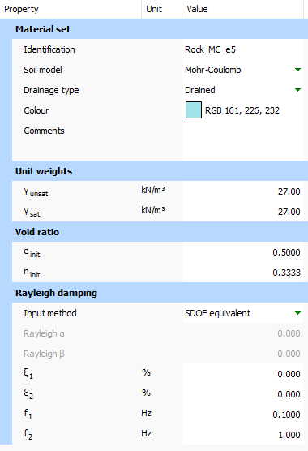
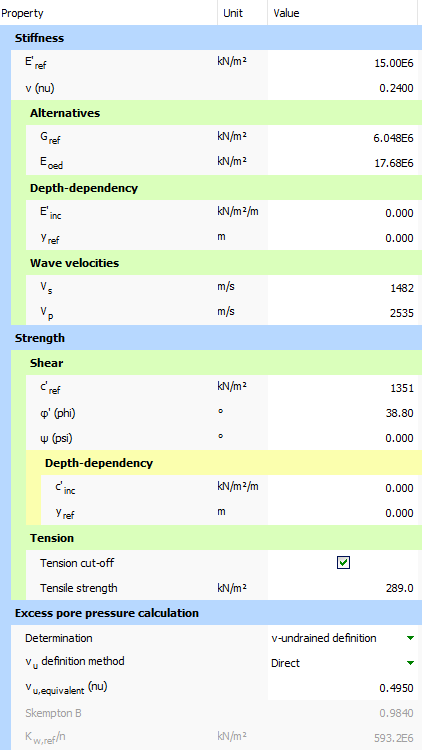
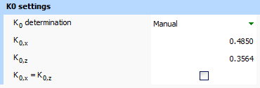
GUI 欄位與屬性名稱對照
| GUI 欄位 | 屬性名稱 | 這個例子 | 說明 |
|---|---|---|---|
| Identification | Identification | "Rock_MC_TC289" | 材料名稱，之後用它指定 |
| Soil model | SoilModel | 2 | 索引依 GUI 下拉選單順序：1 Linear elastic、2 Mohr-Coulomb…（也可寫名稱字串） |
| Drainage type | DrainageType | "Drained" | "Undrained (A)"、"Undrained (B)"、"Undrained (C)"、"Non-porous" |
| γunsat／γsat | gammaUnsat／gammaSat | 27.0 | kN/m³ |
| E′ref | Eref | 15000000.0 | kN/m²（15 GPa） |
| ν′ | nu | 0.24 | |
| c′ref／φ′／ψ | cref／phi／psi | 1351／38.8／0 | kN/m²、度 |
| Tension cut-off | TensionCutOff、TensileStrength | True、289.0 | |
| K0 determination | K0Determination | "Manual" | 預設 "Automatic"＝1 − sinφ |
| K0,x ＝ K0,z | K0PrimaryIsK0Secondary | False | |
| K0,x／K0,z | K0Primary／K0Secondary | 0.485／0.3564 | 面內／出平面方向 |
結構材料：Plate、Anchor、Embedded beam 的寫法（plan_p 有支撐模型）
結構材料一樣是「指令名稱＋屬性對」，只是指令換成 platemat、anchormat、embeddedbeammat。下面取自有支撐的 plan_p 模型：
# 噴凝土 12 cm（Plate，彈性）
platemat "Identification" "Shotcrete_12cm" "MaterialType" "Elastic" "Isotropic" True "EA1" 2400000.0 "EI" 2880.0 "structNu" 0.2 "w" 3.18
# 地錨自由段（Node-to-node anchor，彈塑性，Fmax 671.5 kN）
anchormat "Identification" "Anchor_free_9m" "MaterialType" "Elastoplastic" "EA" 152807.07 "Fmaxcomp" 671.5 "Fmaxtens" 671.5 "Lspacing" 1.5
# 岩栓（Embedded beam row，Ø32、間距 1.5 m）
embeddedbeammat "Identification" "Rockbolt_6m" "MaterialType" "Elastic" "gamma" 0.0 "E" 190000000.0 "CrossSectionType" "UserDefined" "A" 0.000804248 "I" 5.1472e-08 "Lspacing" 1.5 "AxialSkinResistance" "Linear" "TSkinStartMax" 100000.0 "TSkinEndMax" 100000.0 "Fmax" 0.0注意單位：截面積 A 是 m²（Ø32 → 8.042E-4 m²），在 GUI 填成 8.04 就變成 8.04 m²，勁度放大一萬倍。
③ 幾何與量測點
開挖要「挖得掉」，就必須先把每一階要挖的岩體畫成獨立的 polygon。這個模型的幾何照對照的 OpenSees 模型：主廠房（開挖寬 25.4 m）與主變室（17.8 m），岩柱 30 m，共 17 階。
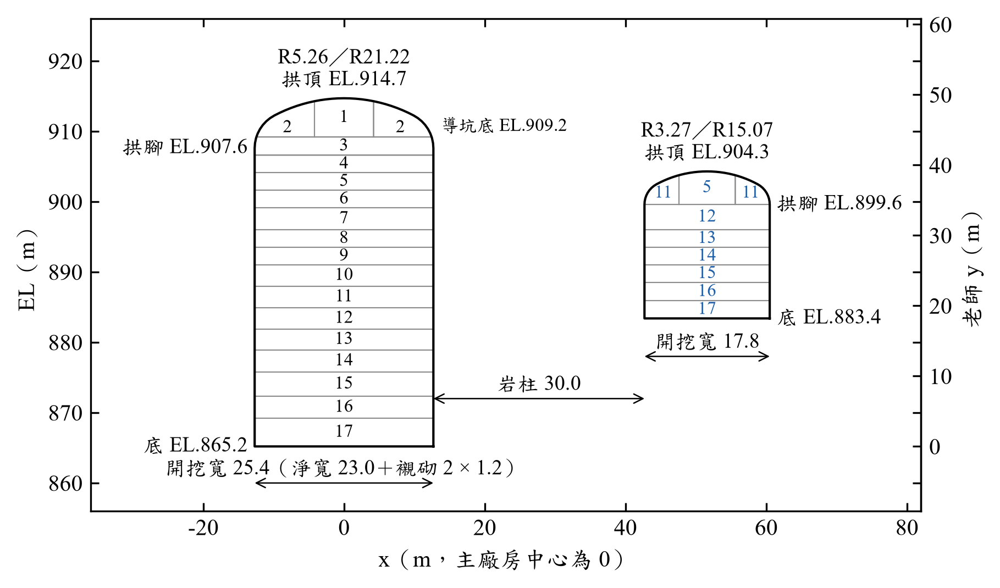
- 切到 Structures 模式，用 Create soil polygon 畫圖形。
- 先畫網格加密用的矩形：加密區（洞外 25 m）、15 m 矩形、兩洞各自的 6 m 矩形。這些矩形不挖，只用來在網格模式分區設定元素大小。
- 再畫開挖區：主廠房 18 個（導坑、左右擴挖、15 個台階）、主變室 9 個。
- 每個 polygon 指定材料 Rock_MC_TC289。
- 最後用 Create point 在量測位置建幾何點，讓那裡一定有網格節點。
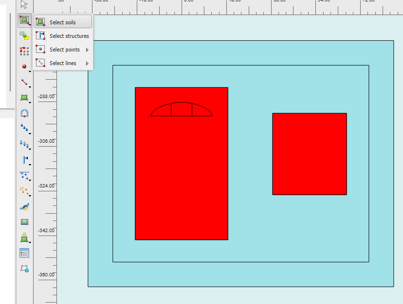
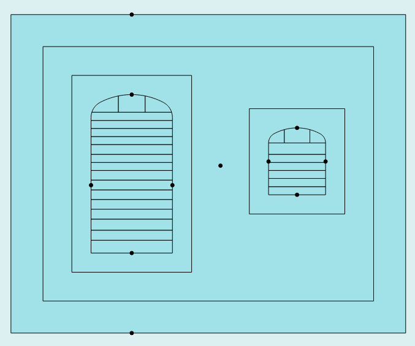
# ── 3. 幾何 ──
gotostructures # 切到 Structures 模式
# 加密區 Polygon_1：兩洞外接矩形外推 25 m
polygon (-37.7 -362.8) (85.5 -362.8) (85.5 -263.3) (-37.7 -263.3)
set Soil_2.Material Rock_MC_TC289 # 第 1 個 polygon 的土體叫 Soil_2
# 15 m 矩形 Polygon_2、主廠房 6 m 矩形 Polygon_3、主變室 6 m 矩形 Polygon_4
polygon (-27.7 -352.8) (75.5 -352.8) (75.5 -273.3) (-27.7 -273.3)
set Soil_3.Material Rock_MC_TC289
…
# 主廠房 L01 導坑 Polygon_5：頂拱用折線逼近圓弧（首尾不必重複，PLAXIS 自動封閉）
polygon (4.2 -293.8) (4.2 -288.7198) (3.4152 -288.5766) (2.5663 -288.4557) (1.7132 -288.3693) (0.8573 -288.3173) (0 -288.3) (-0.8573 -288.3173) (-1.7132 -288.3693) (-2.5663 -288.4557) (-3.4152 -288.5766) (-4.2 -288.7198) (-4.2 -293.8)
set Soil_6.Material Rock_MC_TC289
# 主廠房 L03 台階 Polygon_8（矩形加上拱腳一小段弧）
polygon (12.7 -296.4) (12.7 -295.4) (12.6516 -294.6882) (12.4507 -293.8) (-12.4507 -293.8) (-12.6516 -294.6882) (-12.7 -295.4) (-12.7 -296.4)
set Soil_9.Material Rock_MC_TC289
…
# 量測點：放在所有 polygon 之後建立，不改變 polygon／土體的編號
point 0 -288.3 # PH_CROWN：主廠房拱頂
point 0 -263.3 # PH_CROWN_REF：拱頂上方 25 m 參考點
point -12.7 -316.6 # PH_WALL_L：主廠房左牆 EL.886.4
point 12.7 -316.6 # PH_WALL_R：主廠房右牆（岩柱側）
…命名規則：最容易出錯的地方
| 模式 | 物件名稱 | 規則 |
|---|---|---|
| Structures | Polygon_k、Soil_(k+1) | 依建立順序編號。鑽孔土層先占了 Soil_1，所以第 k 個 polygon 的土體是 Soil_(k+1) |
| Mesh | BoreholePolygon_1_Polygon_1_Polygon_2_Polygon_3_Polygon_5_1 | 交切後的區塊：把「包住它的所有 polygon」由外而內串起來，最後加 _1 |
| Staged construction | Soil_1_Soil_2_Soil_3_Soil_4_Soil_6_1 | 同樣的交切規則，但用土體名稱串接 |
以主廠房導坑（Polygon_5）為例：它位在鑽孔土層、加密區、15 m 矩形、主廠房 6 m 矩形之內，所以在網格模式叫 BoreholePolygon_1_Polygon_1_Polygon_2_Polygon_3_Polygon_5_1，在相位模式叫 Soil_1_Soil_2_Soil_3_Soil_4_Soil_6_1。名稱完全取決於幾何指令的順序，所以 txt 裡的幾何指令不可增刪、調換。
① 同一組點：相鄰兩個開挖區共用的邊（例如導坑與擴挖的分界、拱腳弧線）要用完全相同的座標，捨入到 0.1 mm；鏡射另算一組點會夾出極薄的岩體細條，開挖後位移發散。② 碎小元素：分階線和圓弧的交點附近若還留著原本的弧點（相距 0.2 m 以內），會產生很小的元素，刪掉那個弧點。③ 量測點最後建：point 放在所有 polygon 之後，才不會改變 polygon 的編號。
結構物：線、Plate、介面、岩栓、地錨的寫法
line (12.918 -292) (12.9094 -291.7002) # 先畫線 → Line_1
plate Line_1 # 在線上建 Plate → Plate_1
neginterface Line_1 # 在線的負側建介面 → NegativeInterface_1
set Plate_1.Material Shotcrete_12cm
embeddedbeam (12.918 -292) (18.918 -292) # 岩栓：起點在襯砌上、往岩體延伸 6 m
set EmbeddedBeam_1.Material Rockbolt_6m
set EmbeddedBeam_1.Behaviour "Rock bolt"
n2nanchor (12.918 -292.6178) (21.7813 -294.1806) # 地錨自由段
set NodeToNodeAnchor_1.Material Anchor_free_9m結構物在 Structures 模式建立，在 Staged construction 模式用 activate 物件 相位 啟用。進到相位模式後，線狀物件也會被交切成 Plate_3_1、EmbeddedBeam_5_EmbeddedBeam_6_1 之類的名稱。懸空的岩栓或地錨端點，每一個都算網格中的一個「洞」，數量超過 25 個網格就會失敗，岩栓起點要落在襯砌折線的頂點上。
④ 網格
元素大小由兩層設定決定：全域的基準尺寸 le，乘上每個幾何物件的粗細係數 cf。
| 符號 | 英文名稱 | GUI 位置 | Command | 意義 |
|---|---|---|---|---|
| re | Relative element size (factor) | Mesh options > Element distribution；Expert settings | mesh 後面的數字＝re × 0.06 | 相對尺寸等級，Medium＝1.0 |
| le | Element dimension（target element dimension） | Mesh options > Expert settings | 由上式算出 | 基準尺寸：沒另外設 cf 的地方都朝它長 |
| cf | Coarseness factor | Selection explorer | set 物件.CoarsenessFactor | 相對 le 的倍數，< 1 變細、> 1 變粗 |
le 是「沒有另外指定處」的尺寸，不等於「最外圍的尺寸」。只有在外框沒設 cf、模型內部也沒有其他未設 cf 的線時，外框附近的元素才約等於 le。cf 的預設值：土層、polygon、一般線與點為 1；結構元素（plate、anchor、embedded beam…）與荷重為 0.25。
- Mesh options > Element distribution：五級 re＝2.0／1.33／1.0（Medium，預設）／0.67／0.5；Expert settings 可自訂 re＝0.25。指令裡的數字是 re × 0.06＝0.015。
- 這個模型：le＝0.015 × √(675² ＋ 637.8²)＝0.015 × 928.7＝13.93 m。
- 選 polygon，在 Selection explorer 填 Coarseness factor：cf＝目標尺寸 ÷ le（0.5 m → 0.0359、1 m → 0.0718、2.5 m → 0.179）。
- 按 Generate mesh，再用 View mesh 開 Output 檢查。
cf 只能設 0.03125～8，所以最小元素＝0.03125 × le。預設 Medium 時 le＝55.7 m，最小只能到 1.74 m；要 0.5 m 的元素，le 必須 ≤ 16 m，所以這個模型把 re 降到 0.25。
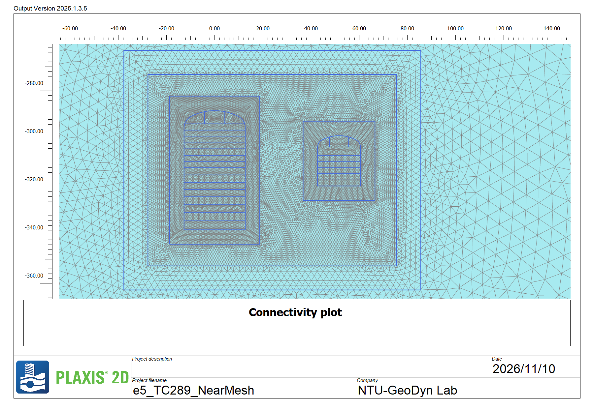
# ── 4. 網格 ──
gotomesh # 切到 Mesh 模式（物件改用交切後的名稱）
# 開挖區：名稱 = 外層 polygon 由外而內串接
set BoreholePolygon_1_Polygon_1_Polygon_2_Polygon_3_Polygon_5_1.CoarsenessFactor 0.179470 # 主廠房導坑
set BoreholePolygon_1_Polygon_1_Polygon_2_Polygon_3_Polygon_6_1.CoarsenessFactor 0.179470 # 右擴挖
…
set BoreholePolygon_1_Polygon_1_Polygon_2_Polygon_4_Polygon_31_1.CoarsenessFactor 0.179470 # 主變室 L17
# 加密矩形「扣掉內部物件之後」剩下的環帶
set BoreholePolygon_1_Polygon_1_Polygon_2_1.CoarsenessFactor 0.179470 # 15 m 矩形
set BoreholePolygon_1_Polygon_1_Polygon_2_Polygon_3_1.CoarsenessFactor 0.179470 # 主廠房 6 m 矩形
set BoreholePolygon_1_Polygon_1_Polygon_2_Polygon_4_1.CoarsenessFactor 0.179470 # 主變室 6 m 矩形
set BoreholePolygon_1_Polygon_1_1.CoarsenessFactor 0.179470 # 加密區
mesh 0.015 # 產生網格，element distribution = re × 0.06le 與 cf 怎麼決定
先想好模型裡最細的尺寸 hmin（洞周）與最粗的尺寸 hmax（遠場），le 必須讓兩端的 cf 都落在 0.03125～8 之內：
- 在這個範圍內依遠場要多粗、元素數要多少選 le。這個模型 hmin＝0.5 m → le ≤ 16 m，取 13.93 m。
- 反推指令參數：
mesh的數字＝le ÷ 對角線＝13.93 ÷ 928.7＝0.015（re＝0.015 ÷ 0.06＝0.25）。也可以在 Expert settings 直接填 Element dimension。 - 每個要指定尺寸的物件：cf＝目標尺寸 ÷ le。
網格產生器實際怎麼切
| 行為 | 說明 | 對建模的意義 |
|---|---|---|
| 實際尺寸會浮動 | cf × le 是目標值，不是保證值；每段幾何線大致切成 round(線長 ÷ 目標尺寸) 段，三角形再依品質調整 | 查網格時看的是「接近」目標尺寸，不會每個元素都剛好相同 |
| 中間自動漸變 | 只指定洞壁和外框時，兩者之間由產生器依距離平滑放大；相鄰三角形要共用邊、維持角度，所以細網格旁不能直接接粗網格，要經過好幾層才放大 | 成長率沒有參數可以設。某段距離內要維持固定尺寸（例如洞周 6 m、15 m），就要畫加密區把那個範圍框起來 |
| 點距決定局部最小尺寸 | 兩點太近、很短的線段、兩條線之間很窄的縫、銳角交會，都會強迫產生很小或很扁的元素（碎片元素），不受 cf 控制 | 幾何點距要 ≥ 該處目標尺寸，例如拱弧點距＝網格尺寸。碎片元素會造成局部應力集中、收斂變難，可能引發局部發散 |
| 自動加密（EMR） | Mesh options 的 Enhanced mesh refinements 預設勾選：點或線距離很近時、兩線夾角不是 90° 的倍數時，自動再乘一個加密係數 | 拱腳、倒角、結構物附近會比設定值再細一些；需要時可取消勾選 |
只設洞壁和 le：設定簡單，但做網格收斂時改洞壁尺寸，整個過渡帶也一起變，結果混了兩個變因。畫加密區（6m+15mRectangle）：洞周 6 m 內固定 H、15 m 內固定 2H，15 m 以外才交給產生器漸變；網格收斂只改 H 一個變因，比較好解釋。
網格失敗時 Input 只會說 Mesh output file not found，真正的原因寫在 %TEMP%\Plaxis2DXTemp\data.MeshInfo 的 ERROR 段（例如 ERROR 1026＝岩體中的洞超過 25 個）。
⑤ 施工相位
- 切到 Staged construction。Initial phase 的 Calculation type 選 K0 procedure：地表水平、單一岩層時，直接用 σ′v＝γz、σ′h＝K0 σ′v 給初始應力即為平衡。地表或層面傾斜時要改用 Gravity loading。
- Add phase：新相位預設接在目前選取的相位之後。
- 在模型上點選本階要挖的 polygon，右鍵 Deactivate。
- Phases 視窗：Loading type 為 Staged construction，ΣMstage 1.0（不平衡力 100% 釋放）。
- 重複 2–4 共 17 次；L05、L11–L17 兩個洞在同一相開挖。
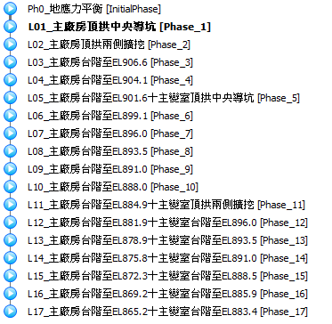
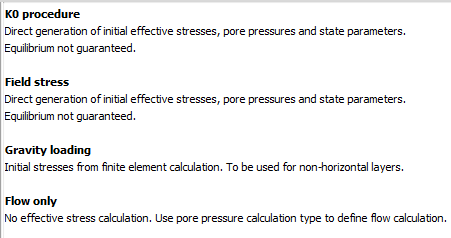
# ── 5. 施工相位 ──
gotostages # 切到 Staged construction
set InitialPhase.Identification "Ph0_地應力平衡"
set InitialPhase.DeformCalcType "K0 procedure"
set InitialPhase.MaxCores 12 # 這一相用 12 核心計算
phase InitialPhase # 以 InitialPhase 為起點新增 → Phase_1
set Phase_1.Identification "L01_主廠房頂拱中央導坑"
deactivate Soil_1_Soil_2_Soil_3_Soil_4_Soil_6_1 Phase_1 # 在 Phase_1 停用導坑岩體
set Phase_1.Deform.Loading.SumMstage 1.0 # 完全釋放（β 法可設 0.55 等）
set Phase_1.MaxCores 12
phase Phase_1 # 以 Phase_1 為起點 → Phase_2
set Phase_2.Identification "L02_主廠房頂拱兩側擴挖"
deactivate Soil_1_Soil_2_Soil_3_Soil_4_Soil_7_1 Phase_2
deactivate Soil_1_Soil_2_Soil_3_Soil_4_Soil_8_1 Phase_2
set Phase_2.Deform.Loading.SumMstage 1.0
set Phase_2.MaxCores 12
…
phase Phase_4 # L05：兩個洞同一相
set Phase_5.Identification "L05_主廠房台階至EL901.6＋主變室頂拱中央導坑"
deactivate Soil_1_Soil_2_Soil_3_Soil_4_Soil_11_1 Phase_5
deactivate Soil_1_Soil_2_Soil_3_Soil_5_Soil_24_1 Phase_5| 指令 | 做什麼 |
|---|---|
phase 前一相 | 新增一個相位，以「前一相」的結果為起點；新相位依序命名 Phase_1、Phase_2… |
deactivate 物件 相位 | 在該相位（及之後）停用物件＝開挖 |
activate 物件 相位 | 在該相位啟用物件＝施作支撐、加載重 |
set Phase_n.Deform.Loading.SumMstage | 本相位結束時不平衡力釋放的比例（0～1） |
set Phase_n.DeformCalcType | "K0 procedure"、"Gravity loading"、"Plastic"、"Safety"… |
set Phase_n.MaxCores | 平行計算用的核心數 |
要模擬「開挖面前方岩體尚未完全釋放就施作支撐」，把一階拆成 a、b 兩相：a 相停用岩體、ΣMstage 0.55；b 相啟用岩栓與地錨、ΣMstage 1.0。ΣMstage 的意義見第 1 章。
⑥ 迭代參數
大洞室無支撐開挖，塑性區發展快，預設參數常在早期就停下（0.5 m 網格在 L02 即 Error 101：Soil body seems to collapse）。這個模型從 L01 起全部相位改用放寬參數：
| Numerical control parameters | 屬性名稱 | 預設 | plan_e |
|---|---|---|---|
| Use default iter. parameters | UseDefaultIterationParams | True | False |
| Max steps | MaxSteps | 1000 | 3000 |
| Tolerated error | ToleratedError | 0.01 | 0.001 |
| Max unloading steps | MaxUnloadingSteps | 5 | 20 |
| Max load fraction per step | MaxLoadFractionPerStep | 0.5 | 0.1 |
| Arc-length control | ArcLengthControl | "On" | "Off" |
| Max iterations／Desired min／max | MaxIterations… | 60／6／15 | 不變 |
# ── 6. 迭代參數 ──
set Phase_1.Deform.UseDefaultIterationParams False # 先關掉「使用預設」，下面的設定才有效
set Phase_1.Deform.ArcLengthControl "Off" # 字串 "Off"；寫 False 會回 Invalid parameters
set Phase_1.Deform.MaxSteps 3000
set Phase_1.Deform.MaxUnloadingSteps 20
set Phase_1.Deform.MaxLoadFractionPerStep 0.1
set Phase_1.Deform.ToleratedError 0.001
…（Phase_2 ～ Phase_17 相同）
save每個參數在求解中扮演的角色（步長、arc-length、unloading 判斷崩塌）請見第 1 章；這裡只要記得：關閉 arc-length 時，少數元素位移發散仍可能被判定收斂，算完要檢查 |u| 異常大的節點（第 4 章）。
⑦ 量測點（curve points）與計算
Curve points 是「每一個計算步都要記錄」的點，用來畫荷載–位移曲線。必須在計算之前選好，而且選點是在 Output 裡做的，所以要換到 Output 的 Commands runner。
- Staged construction 按 Select points for curves，開出 Output。
- Output 的 Expert > Run commands，貼上第 7 節。
acp取離座標最近的節點；因為 2.6 已在那裡建了幾何點，取到的節點座標應與指令完全相同，仍要用眼睛核對清單。update把選點帶回 Input，再按 Calculate。- 算完先檢查 Ph0：σ′v＝γz、σ′h＝K0 σ′v，且沒有塑性點。
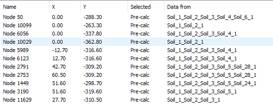
# ── 7. Curve points ──
selectmeshpoints # 進入選點模式
acp "Node" 0 -288.3 # 01 PH_CROWN：主廠房拱頂
acp "Node" 0 -263.3 # 02 PH_CROWN_REF：拱頂上方 25 m
acp "Node" 0 -337.8 # 03 PH_FLOOR：主廠房底板中央
acp "Node" 0 -362.8 # 04 PH_FLOOR_REF：底板下方 25 m
acp "Node" -12.7 -316.6 # 05 PH_WALL_L
acp "Node" 12.7 -316.6 # 06 PH_WALL_R
…
update # 帶回 Input
# ── 8. 回 Input 執行 ──
calculate
save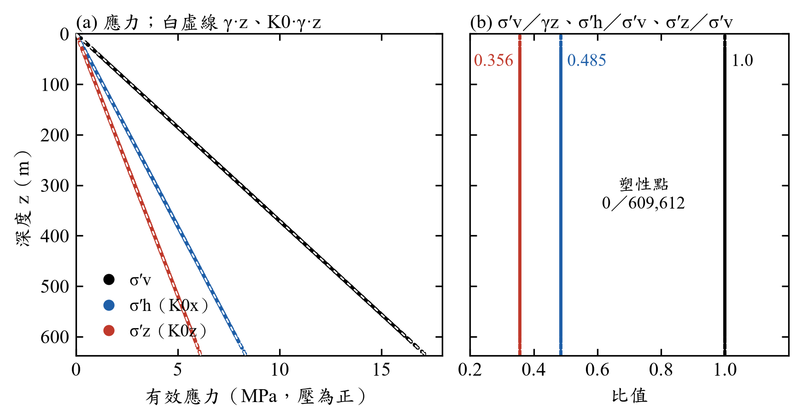
常見錯誤與除錯
- Unknown object物件名稱對不上。最常見的原因是專案裡原本就有物件、幾何指令順序被改過，或是用了 Structures 模式的名稱去設網格／相位。用
echo或 Model explorer 確認目前的實際名稱。 - Invalid parameters型別不對。例如
ArcLengthControl要寫字串"Off"，不能寫False；列舉值的字串要和 GUI 顯示的完全一樣（含空白與大小寫）。 - 一行指令被切斷Commands runner 以換行分隔指令。從簡報或網頁複製長指令時，若中間被自動換行，後半段會變成一個不存在的指令。
- Mesh output file not found網格失敗，看
%TEMP%\Plaxis2DXTemp\data.MeshInfo；常見原因是懸空的結構物端點太多（> 25）或幾何有極短的邊。 - acp 在 Input 執行
acp、selectmeshpoints是 Output 的指令，在 Input 會停下，這是預期行為。 - 小數逗號系統地區設定用逗號當小數點時，指令裡仍一律用「.」。
txt 由 Python 腳本產生（數值集中在一個參數檔），GUI 只用來看結果與截圖。每次修改先在新專案分段貼上：第 1–3 節貼完看幾何、第 4 節貼完看網格，確定沒問題再貼相位與迭代參數。完整範例：KuanMing_plan_e7.txt。